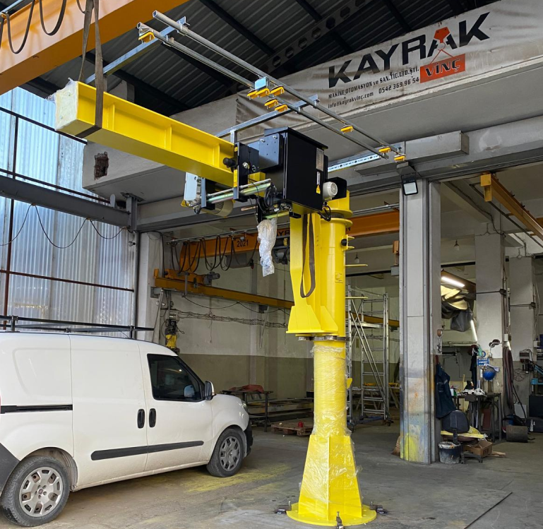
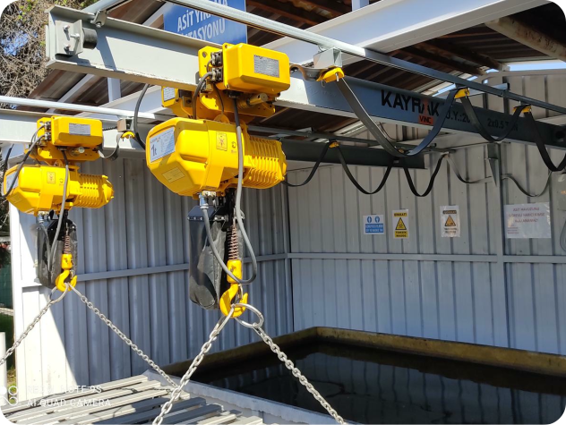
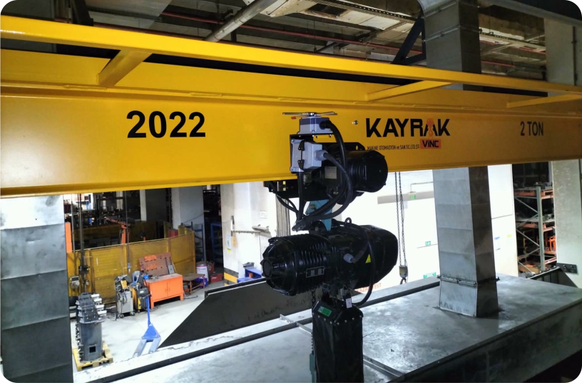
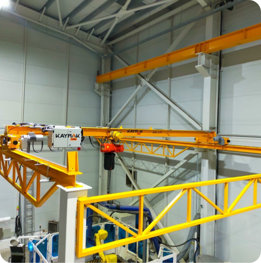
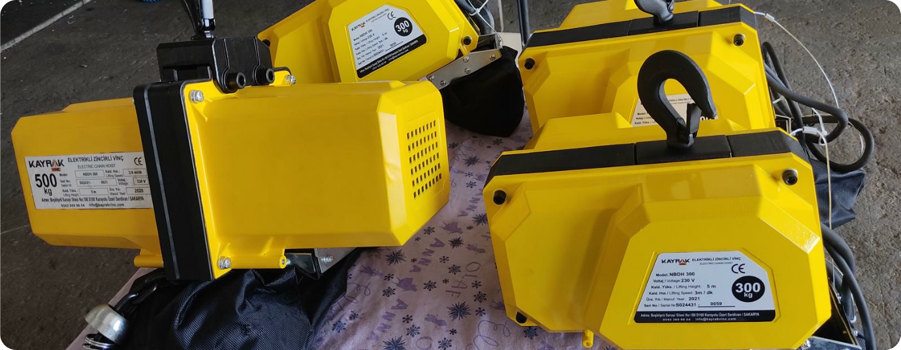
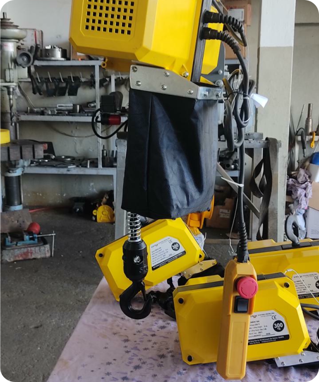

PERGEL ve ELEKTRİKLİ ZİNCİRLİ VİNÇLER
DARBELİ ALANLARDA AKILLI TAŞIMA
Üretim tesisleri ve atölyelerde sınırlı alanlarda çalışan ekipler için geliştirilen Pergel Vinçler, kompakt tasarımı ve yüksek manevra kabiliyetiyle iş süreçlerine büyük kolaylık sağlar. Duvardan ya da zeminden monte edilerek kullanılan bu vinç sistemleri, küçük yükleri hızlı ve güvenli bir şekilde taşımak için ideal çözümdür.


Montaj kolaylığı, düşük enerji tüketimi ve operatör dostu kontrol sistemleriyle Pergel Vinçler, makine yüklemeleri, parça kaldırmaları ve kısa mesafeli taşımalarda işletmelerin zaman ve iş gücü tasarrufu sağlar. Özellikle üretim hatlarında lokal taşıma ihtiyaçlarını karşılamada rakipsizdir.


İster sabit makine üstü uygulamalarda, ister duvar kenarı üretim hatlarında; Pergel Vinç çözümlerimiz, işletmenize hız, güvenlik ve pratiklik kazandırır.
Teknik Özellikler:
- Kapasite Aralığı: 125 kg – 10 ton
- Dönüş Açısı: 180° / 270° / 360° (modeline göre değişir)
- Bom Uzunluğu: 2 m – 10 m (özel projelere göre ayarlanabilir)
- Montaj Tipi: Zemin tipi (ayaklı) veya duvar tipi
- Kaldırma Ünitesi: Elektrikli zincirli ya da halat tamburlu vinç
- Döner Mekanizma: Manuel veya motorlu döner sistem
- Kullanım Alanları: Atölyeler, üretim hatları, makine üstü uygulamalar.
- Kumanda: Kablolu el kumandası ya da uzaktan kumanda seçeneği

Avantajlar:
- Üretim hattına yakın taşıma çözümü sunar
- Operatör tarafından tek başına rahatça kullanılabilir
- Yatırım maliyeti düşük, performansı yüksek
- Montaj için özel bina yapısına gerek duymaz
- Makine yüklemeleri, parça kaldırmaları ve kısa mesafeli taşımalarda büyük hız kazandırır
Öne Çıkan Özellikleri:
- Dar alanlarda maksimum verimlilik sağlar
- 360° dönüş kabiliyetiyle geniş çalışma alanı
- Hafif yapısı sayesinde pratik kullanım
- Kolay montaj ve düşük bakım ihtiyacı
- Yer tasarrufu sağlayan kompakt tasarım
- Modüler yapı sayesinde farklı üretim alanlarına entegre edilebilir
- Hızlı ve güvenli kaldırma operasyonları için ideal çözüm
